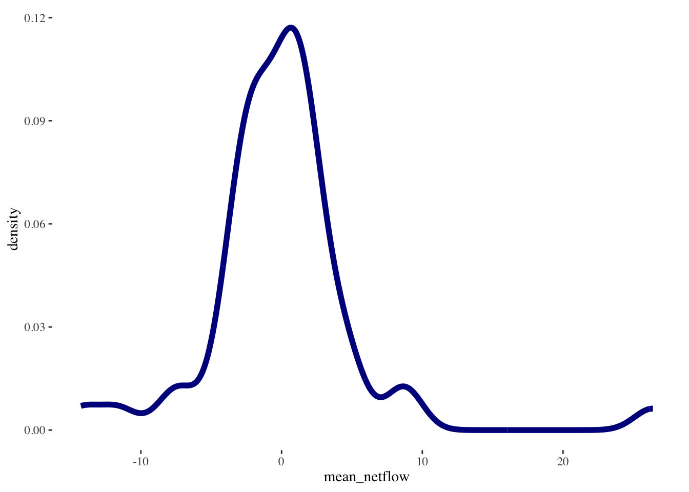

# data wrangling
library(tidyverse)
#library(fs)
#library(here)
# spatial data wrangling
library(sf)
library(mapdeck)
# data visualisation
library(viridis)
#library(viridisLite)
library(ggthemes)
library(patchwork)
library(showtext)
library(gganimate)
#library(gifski)
#library(ggnewscale)Spatial patterns
Aims
Dependencies
Data
Meta-Facebook mobility data
Read and describe Meta-Facebook mobility data
Data for April 2020
# read
df20 <- readRDS("./data/fb/movement_adm/2020_04.rds") %>%
dplyr::filter(country == "CL")
glimpse(df20)Rows: 29,491
Columns: 20
$ GEOMETRY <chr> "LINESTRING (-69.96872527689874 -23.40113…
$ date_time <chr> "2020-04-01 00:00", "2020-04-01 00:00", "…
$ start_polygon_id <chr> "60845", "60862", "60845", "60862", "6086…
$ start_polygon_name <chr> "Antofagasta", "Cardenal Caro", "Antofaga…
$ end_polygon_id <chr> "60847", "60890", "60846", "60863", "6089…
$ end_polygon_name <chr> "Tocopilla", "Melipilla", "El Loa", "Colc…
$ length_km <dbl> 139.7543134, 24.0764953, 100.3339392, 24.…
$ tile_size <dbl> 11, 11, 11, 11, 11, 11, 11, 11, 11, 11, 1…
$ country <chr> "CL", "CL", "CL", "CL", "CL", "CL", "CL",…
$ level <chr> "LEVEL3", "LEVEL3", "LEVEL3", "LEVEL3", "…
$ n_crisis <dbl> 79, 18, 320, 71, NA, 369, NA, 20, 11, NA,…
$ n_baseline <dbl> 59.50, 25.50, 671.00, 132.75, NA, 559.25,…
$ n_difference <dbl> 19.50, -7.50, -351.00, -61.75, NA, -190.2…
$ percent_change <dbl> 32.231405, -28.301887, -52.232143, -46.16…
$ is_statistically_significant <dbl> 0, 0, 0, 0, 0, 0, 0, 0, 0, 0, 0, 0, 0, 0,…
$ z_score <dbl> 2.0148470, -0.6837043, -4.0000000, -1.261…
$ start_lat <dbl> -24.32798, -34.32667, -24.32798, -34.3266…
$ start_lon <dbl> -69.56718, -71.78028, -69.56718, -71.7802…
$ end_lat <dbl> -22.06894, -33.75413, -22.81611, -34.7036…
$ end_lon <dbl> -69.60081, -71.19829, -68.20015, -71.0631…unique_origins <- unique(df20$start_polygon_name)
unique_destinations <- unique(df20$end_polygon_name)Bing tiles
Read and describe Bing tile grids and how they can be created - reference to our work.
R spatial ecosystem to handle spatial data frames.
bing_grid <- read_sf("./data/shp/grid/chile_grid.shp") %>%
st_simplify(preserveTopology =T,
dTolerance = 1000) %>% # 1km
sf::st_make_valid()Administrative areas
Read and describe administrative areas. Explain spatial data frames: geometry, projection, etc.
shp_adm <- read_sf("./data/shp/adm/gadm41_CHL_3.shp") %>%
st_simplify(preserveTopology =T,
dTolerance = 1000) %>% # 1km
sf::st_make_valid() %>%
dplyr::select( -c(
NL_NAME_1, NL_NAME_2, VARNAME_3, NL_NAME_3, CC_3, HASC_3
) )
shp_admSimple feature collection with 345 features and 10 fields (with 1 geometry empty)
Geometry type: GEOMETRY
Dimension: XY
Bounding box: xmin: -109.4488 ymin: -55.97871 xmax: -66.41821 ymax: -17.49952
Geodetic CRS: WGS 84
# A tibble: 345 × 11
GID_3 GID_0 COUNTRY GID_1 NAME_1 GID_2 NAME_2 NAME_3 TYPE_3 ENGTYPE_3
<chr> <chr> <chr> <chr> <chr> <chr> <chr> <chr> <chr> <chr>
1 CHL.2.1.1_1 CHL Chile CHL.2_1 Antof… CHL.… Antof… Antof… Comuna Municipa…
2 CHL.2.1.2_1 CHL Chile CHL.2_1 Antof… CHL.… Antof… Mejil… Comuna Municipa…
3 CHL.2.1.3_1 CHL Chile CHL.2_1 Antof… CHL.… Antof… Sierr… Comuna Municipa…
4 CHL.2.1.4_1 CHL Chile CHL.2_1 Antof… CHL.… Antof… Taltal Comuna Municipa…
5 CHL.2.2.1_1 CHL Chile CHL.2_1 Antof… CHL.… El Loa Calama Comuna Municipa…
6 CHL.2.2.2_1 CHL Chile CHL.2_1 Antof… CHL.… El Loa Ollag… Comuna Municipa…
7 CHL.2.2.3_1 CHL Chile CHL.2_1 Antof… CHL.… El Loa San P… Comuna Municipa…
8 CHL.2.3.1_1 CHL Chile CHL.2_1 Antof… CHL.… Tocop… María… Comuna Municipa…
9 CHL.2.3.2_1 CHL Chile CHL.2_1 Antof… CHL.… Tocop… Tocop… Comuna Municipa…
10 CHL.3.1.1_1 CHL Chile CHL.3_1 Arauc… CHL.… Cautín Carah… Comuna Municipa…
# ℹ 335 more rows
# ℹ 1 more variable: geometry <POLYGON [°]>
Spatial indicators of human mobility
Origin-based indicators
This measure is in relation to a baseline - percentage change and flow
origin_df <- df20 %>%
filter(start_polygon_name != end_polygon_name) %>%
group_by(start_polygon_name) %>%
dplyr::summarise(
mean_perchange = mean(percent_change, na.rm = T),
mean_diff_flow = mean(n_difference, na.rm = T),
sum_diff_flow = sum(n_difference, na.rm = T),
mean_outflow = mean(n_crisis, na.rm = T),
sum_outflow = sum(n_crisis, na.rm = T)
) %>%
ungroup()
tail(origin_df, 10)# A tibble: 10 × 6
start_polygon_name mean_perchange mean_diff_flow sum_diff_flow mean_outflow
<chr> <dbl> <dbl> <dbl> <dbl>
1 Santiago -70.6 -792. -1309523. 612.
2 Talagante -33.8 -263. -127657. 269.
3 Talca -52.4 -150. -70768 115.
4 Tamarugal 24.0 -53.0 -7261. 90.8
5 Tierra del Fuego -76.7 -19.8 -119. 12.2
6 Tocopilla 147. -4.23 -702. 38.5
7 Valdivia -75.8 -234. -65400. 48.3
8 Valparaíso -62.3 -350. -257762. 169.
9 Ñuble -62.5 -165. -56482. 60.4
10 Última Esperanza 1.77 -21.4 -21.4 10
# ℹ 1 more variable: sum_outflow <dbl>Destination-based indicators
destination_df <- df20 %>%
filter(start_polygon_name != end_polygon_name) %>%
group_by(end_polygon_name) %>%
dplyr::summarise(
mean_perchange = mean(percent_change, na.rm = T),
mean_diff_flow = mean(n_difference, na.rm = T),
sum_diff_flow = sum(n_difference, na.rm = T),
mean_inflow = mean(n_crisis, na.rm = T),
sum_inflow = sum(n_crisis, na.rm = T)
) %>%
ungroup()
tail(destination_df, 10)# A tibble: 10 × 6
end_polygon_name mean_perchange mean_diff_flow sum_diff_flow mean_inflow
<chr> <dbl> <dbl> <dbl> <dbl>
1 Santiago -72.1 -850. -1336029. 639.
2 Talagante -30.3 -266. -128140 273.
3 Talca -52.1 -147. -68827 117.
4 Tamarugal 30.0 -49.4 -7360. 88.9
5 Tierra del Fuego -68.3 -16 -112 13.1
6 Tocopilla 63.3 -0.899 -165. 36.6
7 Valdivia -71.2 -230. -63284. 48.2
8 Valparaíso -66.2 -341. -245913. 170.
9 Ñuble -63.1 -158. -57870. 58.0
10 Última Esperanza -12.8 NaN 0 NaN
# ℹ 1 more variable: sum_inflow <dbl>Intraflows
origin_df <- df20 %>%
filter(start_polygon_name == end_polygon_name) %>%
group_by(start_polygon_name) %>%
dplyr::summarise(
mean_perchange = mean(percent_change, na.rm = T),
mean_diff_flow = mean(n_difference, na.rm = T),
sum_diff_flow = sum(n_difference, na.rm = T),
mean_intraflow = mean(n_crisis, na.rm = T),
sum_intraflow = sum(n_crisis, na.rm = T)
) %>%
ungroup()
tail(origin_df, 10)# A tibble: 10 × 6
start_polygon_name mean_perchange mean_diff_flow sum_diff_flow mean_intraflow
<chr> <dbl> <dbl> <dbl> <dbl>
1 Santiago 6.00 32253. 2902809. 585443
2 Talagante 24.0 3776. 339841. 19627.
3 Talca 4.48 1479. 133093. 34622.
4 Tamarugal -15.4 -612. -55063. 3342.
5 Tierra del Fuego 1.62 13.6 1228. 886.
6 Tocopilla 14.5 121. 10931 976.
7 Valdivia -10.6 -2895. -260512. 24506.
8 Valparaíso -1.27 -1295. -116524. 101255.
9 Ñuble -0.441 -158. -14207. 36391.
10 Última Esperanza -18.7 -164. -14750. 712.
# ℹ 1 more variable: sum_intraflow <dbl>Netflows
# mean outflow by area
outflows_df <- df20 %>%
filter(start_polygon_name != end_polygon_name) %>%
group_by(start_polygon_name) %>%
dplyr::summarise(
mean_outflow = mean(n_crisis, na.rm = T)
) %>%
ungroup()
# mean inflow by area
inflows_df <- df20 %>%
filter(start_polygon_name != end_polygon_name) %>%
group_by(end_polygon_name) %>%
dplyr::summarise(
mean_inflow = mean(n_crisis, na.rm = T)
) %>%
ungroup()
# combine data frames
netflow_df <- cbind(inflows_df, outflows_df)
# mean netflow by area
netflow_df <- netflow_df %>%
mutate(
mean_netflow = mean_inflow - mean_outflow
) %>%
select(start_polygon_name, end_polygon_name, mean_inflow, mean_outflow, mean_netflow)
head(netflow_df) start_polygon_name end_polygon_name mean_inflow mean_outflow mean_netflow
1 Antofagasta Antofagasta 63.27513 66.00571 -2.730582
2 Arauco Arauco 91.14286 93.48276 -2.339901
3 Arica Arica 17.44444 20.16379 -2.719349
4 Aysen Aysen 28.47297 27.15385 1.319127
5 Bío-Bío Bío-Bío 77.86880 79.00000 -1.131195
6 Cachapoal Cachapoal 110.54008 112.71988 -2.179800ggplot(data = netflow_df) +
geom_density(aes(x = mean_netflow),
alpha=0.5,
colour="darkblue",
linewidth = 2
) +
theme_tufte()
Mapping
Colour palettes
For creating maps, cartography is important. A carefully crafted map can be an effective way of communicating complex information. Design issues include poor placement, size and readability of text and careless selection of colors. Have a look the style guide of the Journal of Maps for details.
Note
For colour palettes, we recommend the following resources:
the R packages
viridisandRColorBrewerthe website color brewer 2.0
a publication by Crameri, Shephard, and Heron (2020)
Handling spatial data
# set crs
crs_default = "EPSG:4326"df20 <- readRDS("./data/fb/movement_adm/2020_04.rds") %>%
st_drop_geometry() %>%
dplyr::filter(country == "CL") %>%
st_as_sf(coords = c("start_lon", "start_lat"),
crs = crs_default)
glimpse(df20)Rows: 29,491
Columns: 19
$ GEOMETRY <chr> "LINESTRING (-69.96872527689874 -23.40113…
$ date_time <chr> "2020-04-01 00:00", "2020-04-01 00:00", "…
$ start_polygon_id <chr> "60845", "60862", "60845", "60862", "6086…
$ start_polygon_name <chr> "Antofagasta", "Cardenal Caro", "Antofaga…
$ end_polygon_id <chr> "60847", "60890", "60846", "60863", "6089…
$ end_polygon_name <chr> "Tocopilla", "Melipilla", "El Loa", "Colc…
$ length_km <dbl> 139.7543134, 24.0764953, 100.3339392, 24.…
$ tile_size <dbl> 11, 11, 11, 11, 11, 11, 11, 11, 11, 11, 1…
$ country <chr> "CL", "CL", "CL", "CL", "CL", "CL", "CL",…
$ level <chr> "LEVEL3", "LEVEL3", "LEVEL3", "LEVEL3", "…
$ n_crisis <dbl> 79, 18, 320, 71, NA, 369, NA, 20, 11, NA,…
$ n_baseline <dbl> 59.50, 25.50, 671.00, 132.75, NA, 559.25,…
$ n_difference <dbl> 19.50, -7.50, -351.00, -61.75, NA, -190.2…
$ percent_change <dbl> 32.231405, -28.301887, -52.232143, -46.16…
$ is_statistically_significant <dbl> 0, 0, 0, 0, 0, 0, 0, 0, 0, 0, 0, 0, 0, 0,…
$ z_score <dbl> 2.0148470, -0.6837043, -4.0000000, -1.261…
$ end_lat <dbl> -22.06894, -33.75413, -22.81611, -34.7036…
$ end_lon <dbl> -69.60081, -71.19829, -68.20015, -71.0631…
$ geometry <POINT [°]> POINT (-69.56718 -24.32798), POINT …shp_adm <- read_sf("./data/shp/adm/gadm41_CHL_3.shp") %>%
st_simplify(preserveTopology =T,
dTolerance = 1000) %>% # 1km
sf::st_make_valid() %>%
dplyr::select( c(
NAME_3,
ENGTYPE_3,
geometry
) ) %>%
st_transform(crs_default)
shp_admSimple feature collection with 345 features and 2 fields (with 1 geometry empty)
Geometry type: GEOMETRY
Dimension: XY
Bounding box: xmin: -109.4488 ymin: -55.97871 xmax: -66.41821 ymax: -17.49952
Geodetic CRS: WGS 84
# A tibble: 345 × 3
NAME_3 ENGTYPE_3 geometry
* <chr> <chr> <POLYGON [°]>
1 Antofagasta Municipality ((-70.60031 -23.4473, -70.60352 -23.46711,…
2 Mejillones Municipality ((-70.02407 -23.06381, -69.98062 -22.95599…
3 Sierra Gorda Municipality ((-68.69855 -23.92313, -68.69079 -23.85126…
4 Taltal Municipality ((-70.4239 -24.61988, -70.56963 -24.55613,…
5 Calama Municipality ((-68.01055 -22.03307, -68.19283 -21.90586…
6 Ollagüe Municipality ((-68.05991 -21.77872, -68.18056 -21.60407…
7 San Pedro de Atacama Municipality ((-67.18149 -22.8142, -67.61008 -22.90392,…
8 María Elena Municipality ((-69.96878 -22.86768, -69.53614 -22.88021…
9 Tocopilla Municipality ((-70.26542 -22.62504, -69.96545 -22.42489…
10 Carahue Municipality ((-73.06431 -38.47689, -73.10936 -38.44577…
# ℹ 335 more rowsRecompute
# mean outflow by area
outflows_df <- df20 %>%
filter(start_polygon_name != end_polygon_name) %>%
group_by(start_polygon_name) %>%
dplyr::summarise(
mean_outflow = mean(n_crisis, na.rm = T)
) %>%
ungroup()
# mean inflow by area
inflows_df <- df20 %>%
filter(start_polygon_name != end_polygon_name) %>%
group_by(end_polygon_name) %>%
dplyr::summarise(
mean_inflow = mean(n_crisis, na.rm = T)
) %>%
ungroup() %>%
st_drop_geometry()
# combine data frames
netflow_df <- cbind(outflows_df, inflows_df)
# mean netflow by area
netflow_df <- netflow_df %>%
mutate(
mean_netflow = mean_inflow - mean_outflow
) %>%
dplyr::select(start_polygon_name, mean_inflow, mean_outflow, mean_netflow, geometry) %>%
rename(
polygon_name = start_polygon_name
)
head(netflow_df)Simple feature collection with 6 features and 4 fields
Geometry type: POINT
Dimension: XY
Bounding box: xmin: -73.58022 ymin: -45.45868 xmax: -69.56718 ymax: -18.71308
Geodetic CRS: WGS 84
polygon_name mean_inflow mean_outflow mean_netflow
1 Antofagasta 63.27513 66.00571 -2.730582
2 Arauco 91.14286 93.48276 -2.339901
3 Arica 17.44444 20.16379 -2.719349
4 Aysen 28.47297 27.15385 1.319127
5 Bío-Bío 77.86880 79.00000 -1.131195
6 Cachapoal 110.54008 112.71988 -2.179800
geometry
1 POINT (-69.56718 -24.32798)
2 POINT (-73.3454 -37.72772)
3 POINT (-69.85541 -18.71308)
4 POINT (-73.58022 -45.45868)
5 POINT (-71.92786 -37.53828)
6 POINT (-70.7088 -34.28421)nrow(netflow_df)[1] 51Join point-in-polygons
Overlay start points from the mobility dataset over the polygons. Extract start points from the linestring geometry and use that to create the shapefile.
mob_indicators <- st_join(shp_adm, netflow_df)
mob_indicatorsSimple feature collection with 345 features and 6 fields (with 1 geometry empty)
Geometry type: GEOMETRY
Dimension: XY
Bounding box: xmin: -109.4488 ymin: -55.97871 xmax: -66.41821 ymax: -17.49952
Geodetic CRS: WGS 84
# A tibble: 345 × 7
NAME_3 ENGTYPE_3 geometry polygon_name mean_inflow
* <chr> <chr> <POLYGON [°]> <chr> <dbl>
1 Antofagasta Municipa… ((-70.60031 -23.4473, -7… Antofagasta 63.3
2 Mejillones Municipa… ((-70.02407 -23.06381, -… <NA> NA
3 Sierra Gorda Municipa… ((-68.69855 -23.92313, -… <NA> NA
4 Taltal Municipa… ((-70.4239 -24.61988, -7… <NA> NA
5 Calama Municipa… ((-68.01055 -22.03307, -… <NA> NA
6 Ollagüe Municipa… ((-68.05991 -21.77872, -… <NA> NA
7 San Pedro de At… Municipa… ((-67.18149 -22.8142, -6… El Loa 93.2
8 María Elena Municipa… ((-69.96878 -22.86768, -… Tocopilla 36.6
9 Tocopilla Municipa… ((-70.26542 -22.62504, -… <NA> NA
10 Carahue Municipa… ((-73.06431 -38.47689, -… <NA> NA
# ℹ 335 more rows
# ℹ 2 more variables: mean_outflow <dbl>, mean_netflow <dbl>Choropleths
Choropleths are thematic maps. They are easy to create but also to get wrong. We will look at a set of the principles you can follow to create effective choropleth maps. Here three more questions to consider:
What is being plotted?
What is the target audience?
What degree of interactivity we want to offer?
Map flows - use code from uk migration paper
Interactive mapping
Flow mapping
Crameri, Fabio, Grace E. Shephard, and Philip J. Heron. 2020. “The Misuse of Colour in Science Communication.” Nature Communications 11 (1). https://doi.org/10.1038/s41467-020-19160-7.